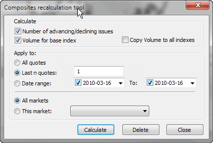

Composite recalculation window

This dialog allows automatic calculation of the number and volume of advancing/declining/unchanged
issues. This dialog also allows calculation of volume numbers for indexes
if imported incorrectly. Please note that automatic recalculation of composite
data only makes sense when you follow the whole exchange (all symbols are included
in your database); otherwise, this calculation will give wrong results.
In order to calculate the composites in the database, it is necessary to set the base index for the market, as it may happen that not all stocks are quoted every business day. AmiBroker checks the 'base index' quotation dates and tries to find the corresponding quotes of all the stocks belonging to that market, to find out how many issues advanced, declined, and remained unchanged.
To calculate composites, you need to:
- Open Categories window using Symbol -> Categories menu item.
- Select a base index for a given market in the Markets tab and the 'Base indexes for Composites' combo.
For example, if you are following NYSE, this can be ^DJI (Dow Jones Average).
^DJI must be marked as an index in Symbol -> Information and must belong to the same market.
- Choose "Symbol -> Calculate composites" menu item to open the window shown below and mark:
Number of advancing/declining issues and choose the markets for which you calculate composites and the time range.
- Click Calculate.
There are also two additional fields available:
- Volume for base index
- Copy volume to all indexes
These fields are provided in case you DON'T have real volume data for index quotes. In that case, AmiBroker can calculate the volume for an index as the sum of volumes of all stocks belonging to a given market.
The first option assigns the calculated volume only to the base index; the second option copies the volume figure to all indexes belonging to a given market.